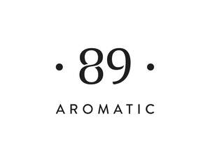

Trade Mark Journal No.2026/011 13 March 2026
UK00004346138 26 February 2026 (3,4,5,35)

- Class 3
- Cosmetics and cosmetic preparations; Decorative cosmetics; Colour cosmetics; Cosmetics in the form of rouge; Natural cosmetics; Cleansing milk for toilet purposes; Pomades for cosmetic purposes; Non-medicated cosmetics; Cosmetic creams; Toning creams [cosmetic]; Shaving cream; Aftershave creams; Non-medicated creams; Barrier creams; Body cream; Body mask cream; Body washes; Body moisturisers; Body milks; Body lotions; Body oils [for cosmetic use]; Body gels; Body and facial gels [cosmetics]; Hair and body wash; Body deodorants [perfumery]; Beauty lotions; Shaving lotion; Cosmetic creams and lotions; Exfoliants; Facial scrubs [cosmetic]; Cosmetic body scrubs; Body scrub; Cosmetic moisturisers; Facial butters; Body and facial oils; Face and body creams; Face and body masks; Lotions for face and body care; Body and facial creams [cosmetics]; Body cleaning and beauty care preparations; Hand creams; Nail care preparations; Nail cosmetics; Lip cream; Spray cleaners for household use; Facial washes [cosmetic]; Face gels; Facial care preparations; Ethereal oils; Aromatic oils; Oils for cosmetic purposes; Flavourings for beverages [essential oils]; Aromatic essential oils; Natural essential oils; Air fragrancing preparations; Cleaning preparations; Room fragrancing preparations; Fragrances for automobiles; Fragrance preparations; Room scenting sprays; Floor cleaning preparations; Detergents; Detergents for machine dishwashing; Washing-up liquids; Oven cleaning preparations; Glass cleaning preparations; Windscreen cleaning preparations; Windscreen cleaning liquids; Fabric softeners; Laundry preparations; Laundry liquids; Washing liquids; Perfumery and fragrances; Natural perfumery; Oils for perfumes and scents; Perfumery; Perfumes; Cosmetic soaps; Soap; Essential oils for household use; Essential oils for use in air fresheners; Cleaning and fragrancing preparations, other than for personal use; Breath freshening sprays; Breath fresheners; Laundry balls filled with laundry detergents; Micellar water; Tonics [cosmetic]; Beauty tonics for application to the face; Facial toners [cosmetic]; Beauty serums; Hair treatment preparations; Bath and shower preparations; Cosmetic preparations for bath and shower.
- Class 4
- Oils for lighting; Candles; Wicks for candles; Floating candles; Perfumed candles; Special occasion candles; Candle assemblies; Illuminating wax; Wax [raw material]; Wax for making candles.
- Class 5
- Air deodorizing preparations; Car air fresheners; Air deodoriser sprays; Air freshener sprays; Air deodorising and air purifying preparations; Air freshener refills; Automobile deodorizers.
- Class 35
- Online retail services relating to cosmetics; Retail services in relation to dietetic preparations; Advertising, marketing and promotional services; Business assistance, management and administrative services; Management advisory services related to franchising; Business management advisory services relating to franchising; Business advice relating to franchising; Advisory services (Business -) relating to the operation of franchises; Assistance, advisory services and consultancy with regard to business organization; Business advice and consultancy relating to franchising; Business management consultancy; Wholesale services relating to automobile accessories; Wholesale services in relation to cleaning preparations; Wholesale services in relation to beauty implements for humans; Online retail store services relating to cosmetic and beauty products; Retail services relating to automobile accessories; Retail services in relation to dietary supplements; Retail services in relation to cleaning preparations; Retail services in relation to beauty implements for humans; Wholesale services in relation to fragrancing preparations; Retail services relating to fragrancing preparations; Administrative order processing; Product demonstrations and product display services; Sales promotion for others.
UAB „OLD LT“
Representative: Brand Protect Limited